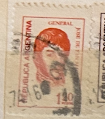
| SOURCE | TITLE| IMAGE MATCH | click to source page |
| eBay | ARGENTINA 6 stamps w/error described | eBay | 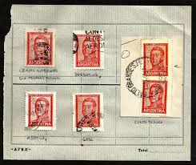 |
| Stamp Auction Network | Philatino - Guillermo Jalil Sale - 1947 Page 37 | 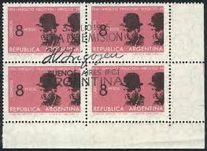 |
| eBay | Preços baixos em Selos da Argentina Individuais | eBay | 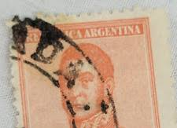 |
| Stamp Auction Network | Philatino - Guillermo Jalil Sale - 2007 Page 43 | 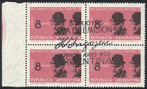 |
| eBay | Historical Figures Red Argentine Stamps for sale | eBay | 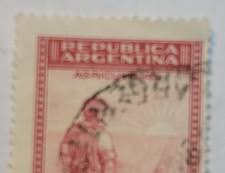 |
| eBay | Argentina 1963 10 Pesos Carl Jose De San Martin Used postal stamp | eBay | 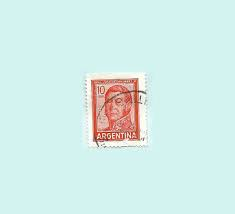 |
| Stamp Auction Network | Philatino - Guillermo Jalil Sale - 1948 Page 10 | 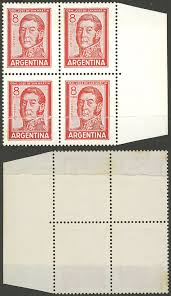 |
| Any real value here : r/askStampCollectors | 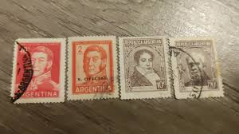 | |
| Filatelia Argüello | OFFSET BLOCK, COMPLEMENT TO UP, FIRST DAY OF CIRCULATION – GJ 1308CA – Filatelia Argüello | 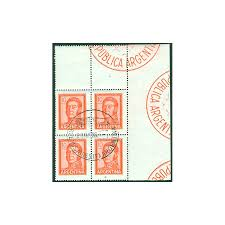 |
| Dreamstime.com | 174 Stamp San Francisco Stock Photos - Free & Royalty-Free Stock Photos from Dreamstime | 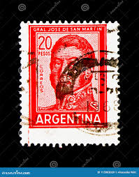 |
| Stamp Auction Network | Philatino - Guillermo Jalil Sale - 1947 Page 36 | 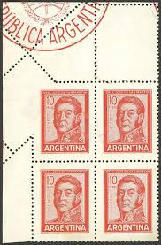 |
| eBay | Argentina map Antarctic territory claimed Space Rocket stamp 1947 AMR1 | eBay | 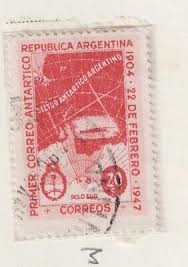 |
| Colnect | Stamp: Map of Argentine Antarctic Claims (Argentina(43rd Anniversary of Antarctic Postal Services) Mi:AR 541X,Sn:AR 562,Yt:AR 486,Sg:AR 792,Gz :AR 636,Göt:AR 944 📮 | 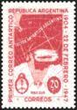 |
| Stamp Auction Network | catalog Level 3 | 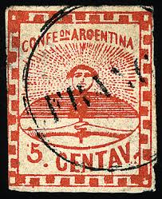 |
| Stamp Auction | Philatino - Guillermo Jalil Sale - 2231 Page 4 | 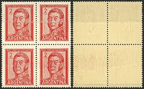 |
| eBay | 1968-70- Argentina SC# 851-890 - Jose San Martin - 3 Different Stamps - Used | eBay | 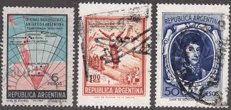 |
| eBay | Historical Figures Red Argentine Stamps for sale | eBay | 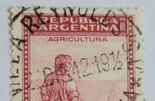 |
| eBay | ARGENTINA MNH & USED 1969 SG1270-1274 ARGENTINE MUSICIANS | eBay | 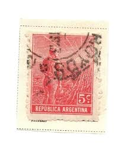 |
| eBay | ARGENTINA 775 - Ricardo Guiraldes "Writer" (pf21410) | eBay | 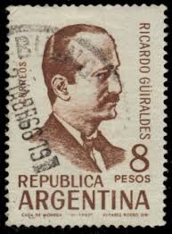 |
| eBay | Vintage Argentina Postage Stamp Lot of 8 (1960 - 70s) | eBay | 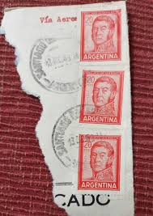 |
| Bob Shop | Argentina - Argentina vintage Ley de Sellos 1 Used Revenue stamp was listed for 0.00 on 11 Oct at 06:31 by Klaas47 in Cape Town (ID:626536387) | 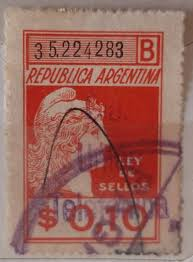 |
| eBay | Argentina Scott #742 4 pesos Stamp - Jose Hernandez 1960s (Used Hinged) X26 | eBay | 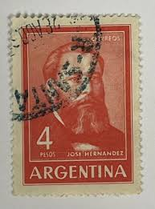 |
| eBay | Vintage Invoice - Argentina - 1937 - Groceries & Provisions for Steam Ship | eBay | 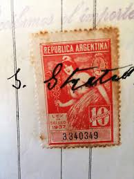 |
| Alamy | USA - CIRCA 1945: A Stamp printed in USA shows the Marines Raising the Flag on Mt. Suribachi, Iwo Jima, from a Photograph by Joel Rosenthal, circa 194 Stock Photo - Alamy | 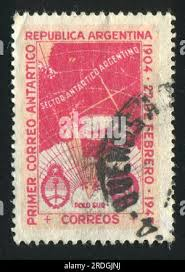 |
| eBay | Argentina Stamps GJ #756 Block x 4 Servicio Oficial MNH w Right Complement | eBay | 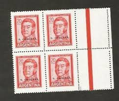 |
| Todocolección | sello › argentina 1966 josé hernandéz (1834-188 - Buy Antique stamps of Argentina on todocoleccion | 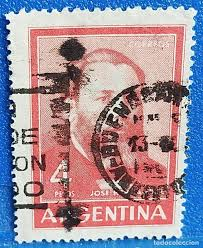 |
| eBay | Argentina Postage Stamp | eBay | 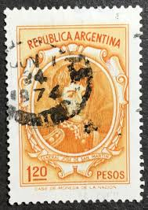 |
| Shutterstock | 62 1917 1967 Royalty-Free Images, Stock Photos & Pictures | Shutterstock | 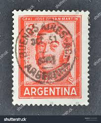 |
| Filatelia Argüello | COOPERATION UNION S.A. (CG) – WB C13 (PAIR) – Filatelia Argüello | 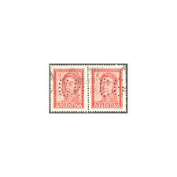 |
| eBay | Orange Individual Latin American Stamps for sale | eBay | 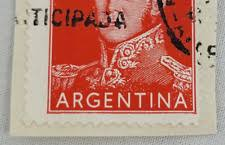 |
| eBay | Mint Never Hinged/MNH Argentine Stamps for sale | eBay | 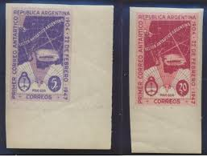 |
| Pt 3 of the stamps. I think there may be a pt 4 and 5 too : r/askStampCollectors | 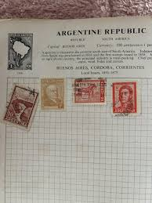 | |
| Filatelia Argüello | BLOCK WITH VARITIES – Filatelia Argüello | 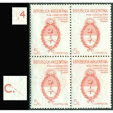 |
| Todocolección | argentina - plan quinquenal 1947 - 1951 - Buy Antique stamps of Argentina on todocoleccion | 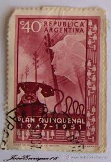 |
| Alamy | ARGENTINA - CIRCA 1957: a stamp printed in the Argentina shows Globe, Flag and Compass Rose, International Congress for Tourism, circa 1957 Stock Photo - Alamy | 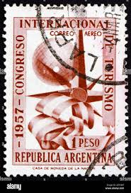 |
| Alamy | ARGENTINA - CIRCA 1967: a stamp printed in the Argentina shows Guillermo Brown, First Admiral of Argentina, circa 1967 Stock Photo - Alamy | 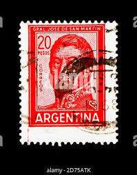 |
| eBay | ARGENTINA, 1873 Saavedra, 90c. Blue, MUESTRA, lhm. | eBay | 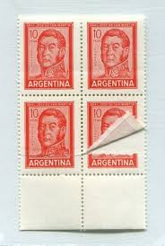 |
| eBay | Argentina Postage Stamp | eBay | 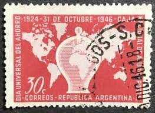 |
| eBay | Vintage stamps, Lot of 30+, International + US, early to mid-century 1900's - X | eBay | 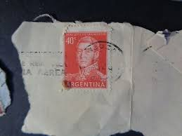 |
| Mystic Stamp Company | MP1164 - Argentina, 800v - Mystic Stamp Company | 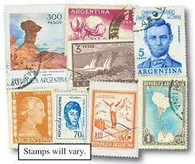 |
| Todocolección | argentina, 1954** trigo, yvert 547 - Buy Antique stamps of Argentina on todocoleccion | 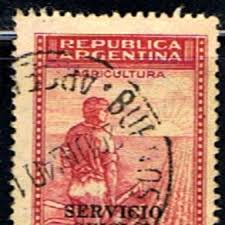 |
| Poppe Stamps | Poppe Stamps: Argentine Republic, 1936, 656, Industries, Agriculture And Farming, Farmer - stamps for sale by theme and country | 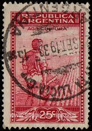 |
| Filatelia Argüello | WITH LEFT COMPLEMENT, MNH – GJ 684(CZ) – Filatelia Argüello | 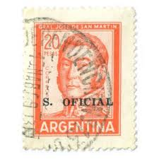 |
| eBay | Brown Individual Argentine Stamps for sale | eBay | 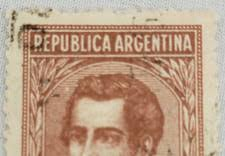 |
| Alamy | ARGENTINA-CIRCA 1935:A stamp printed in ARGENTINA shows image of Jose Francisco de San Martin, known simply as Don Jose de San Martin, was an Argentin Stock Photo - Alamy | 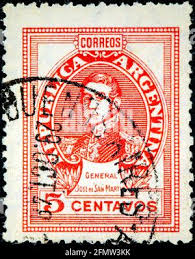 |
| eBay | ARGENTINA to BRAZIL GERMANY 1932, $$$, ZEPPELIN, 1st SA Flight Cover,ex Nutley | eBay | 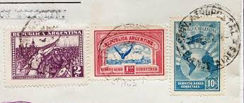 |
| eBay | Argentina 1965 San Martin 10c Variety PERFORATION Displacement Error MNH (2) | eBay | 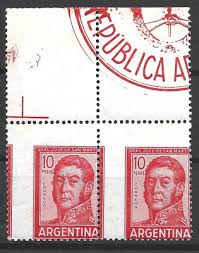 |
| Dreamstime.com | Inca Stamp Stock Photos - Free & Royalty-Free Stock Photos from Dreamstime | 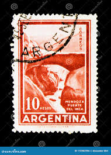 |
| eBay | Red Argentine Stamps for sale | eBay | 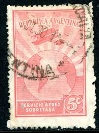 |
| eBay | Art, Artists Individual Argentine Stamps for sale | eBay | |
| Alamy | ARGENTINA - CIRCA 1910: a stamp printed in the Argentina shows Cornelio Saavedra, Military Officer and Statesman, President of Primera Junta, circa 19 Stock Photo - Alamy | |
| Dreamstime.com | Postage Stamp Printed in Argentina Shows Map of Argentine Antartict Claims, 43th Anniversary of Postal Service in the Antartict Editorial Stock Photo - Image of post, october: 165445533 | |
| eBay | Aviation Error, Variety Argentina Stamps for sale | eBay | |
| Cherrystone Auctions | U.S. and Worldwide Stamps & Postal History - January 12-13, 2016 - ARGENTINA | |
| sellosmundo.com | Honesty, Justice, Duty. . Argentina America ref. 171654 | |
| Latinafy | Argentina 1939 Sobre Circulado Numero 63k | |
| eBay | Individual Argentine Stamps for sale | eBay | |
| Flickr | 1928-C18-used | filipp10 | Flickr | |
| eBay | Vintage Cover, ROSARIO,ARGENTINA, ANTARCTICA,1967,Hope Research Base,"Esperanza" | eBay | |
| Shutterstock | Argentina Circa 1959 Stamp Printed Argentina Stock Photo 71418958 | Shutterstock |